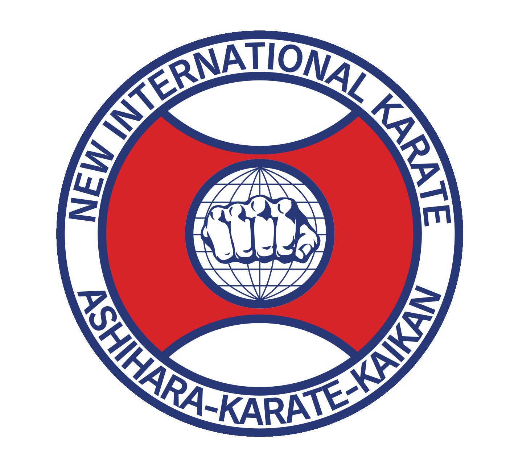
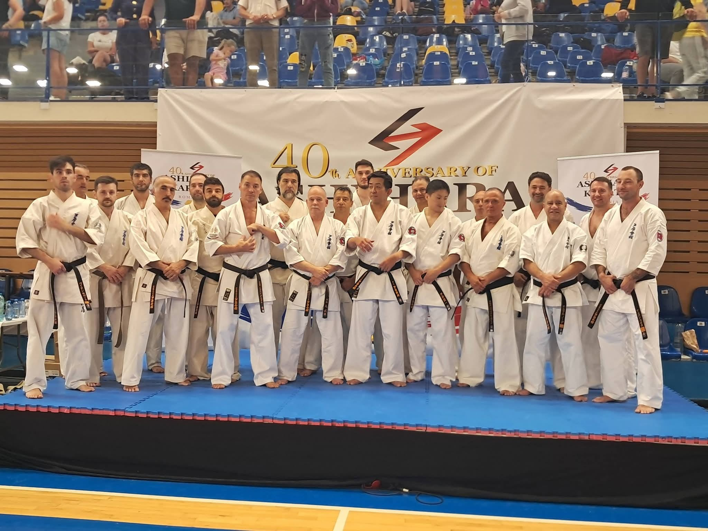
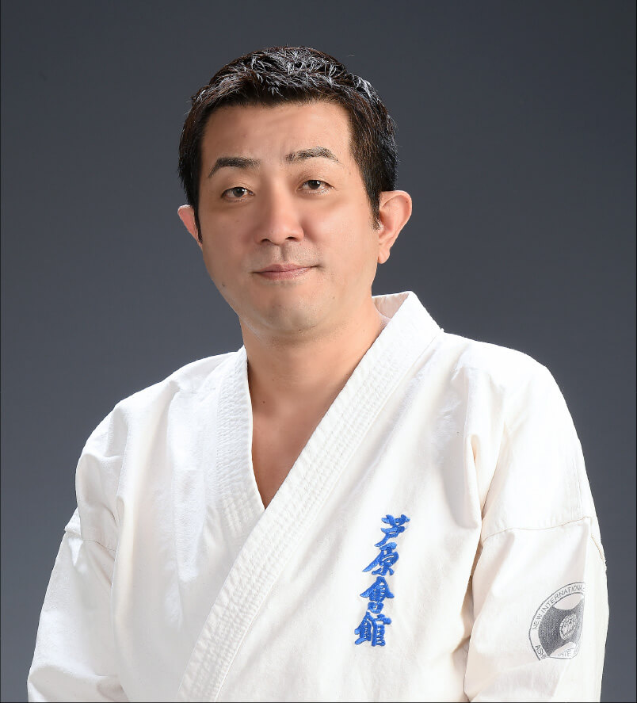

Kyokushin'den Sabaki'ye
Hideyuki Ashihara'nın Japonya'da kurduğu ekolün doğuşu ve dünyaya yayılışı.
Bir Kyokushin Öğrencisi
Hideyuki Ashihara, 5 Aralık 1944'te Hiroşima'da doğdu. Eylül 1961'de, henüz 16 yaşındayken Kyokushinkai'nin kurucusu Mas Oyama'nın dojosuna katıldı.
26 Mart 1964'te, 19 yaşında siyah kuşak (Shodan) derecesini aldı; kısa süre sonra eğitmen oldu ve Kyokushinkai'yi Japonya'nın batısında genişletti.

Ashihara Kaikan'ın Doğuşu
Eylül 1980'de Hideyuki Ashihara, Matsuyama'daki kendi dojosunda Yeni Uluslararası Karate Organizasyonu'nu (NIKO) — Ashihara Kaikan'ı kurdu ve 'Kanchō' (Büyük Usta) unvanını aldı.
Yeni ekolün merkezinde 'sabaki' yer alıyordu: hazırlık, mesafe ve zamanlama değerlendirmesi ile duruşun korunmasına dayanan, rakibin saldırısından dairesel biçimde kaçıp karşı saldırıya geçen bir sistem.


Japonya'dan Dünyaya
Ekol hızla büyüdü ve önemli isimler yetiştirdi: öğrencilerinden Kazuyoshi Ishii, K-1 kickboks organizasyonunun yaratıcılarından biri oldu.
Bugün NIKO, Japonya'da yaklaşık 180, yurt dışında ise 220'den fazla şube ile Avrupa, Amerika, Ortadoğu ve Afrika'da varlığını sürdürüyor; her yıl uluslararası şampiyonalar ve yıldönümü etkinlikleri düzenleniyor.
Yeni Nesil Liderlik
1987'de ALS (amyotrofik lateral skleroz) teşhisi konan Kanchō Ashihara, 1992'de kıdemli öğrencisi Hiroshi Harada'yı NIKO'nun tüm işlerini yürütmekle görevlendirdi.
24 Nisan 1995'te, 50 yaşında vefat etti; cenazesine 1000'den fazla kişi katıldı. Oğlu Hidenori Ashihara, 18 yaşında NIKO'nun ikinci Kanchō'su oldu ve organizasyonu bugün de yönetiyor.
Kanchō'nun vefatının ardından bazı kıdemli öğrenciler kendi organizasyonlarını kurdu, ancak hepsi aynı sabaki temelini paylaşmaya devam ediyor.

Kökten Bugüne
Oyama Dojosu'na Katılım
Genç Hideyuki Ashihara, Mas Oyama'nın Kyokushinkai dojosunda eğitime başlar.
Siyah Kuşak
19 yaşındaki Ashihara Shodan derecesini alır ve kısa sürede eğitmen olur.
Ashihara Kaikan'ın Kuruluşu
Eylül 1980'de NIKO — Ashihara Kaikan resmen kurulur; Kanchō unvanı bu dönemde alınır.
Kanchō'nun Vefatı
Hideyuki Ashihara 24 Nisan 1995'te vefat eder; oğlu Hidenori Ashihara ikinci Kanchō olur.
Küresel Ağ
NIKO bugün Japonya'da 180, yurt dışında 220'den fazla dojo ile faaliyet gösteriyor.